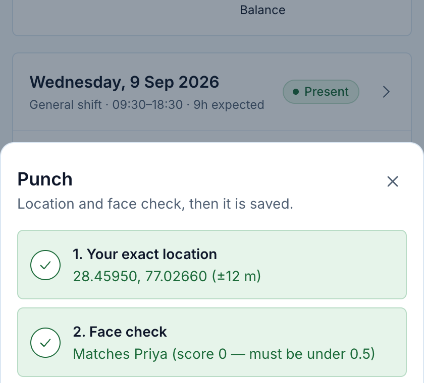
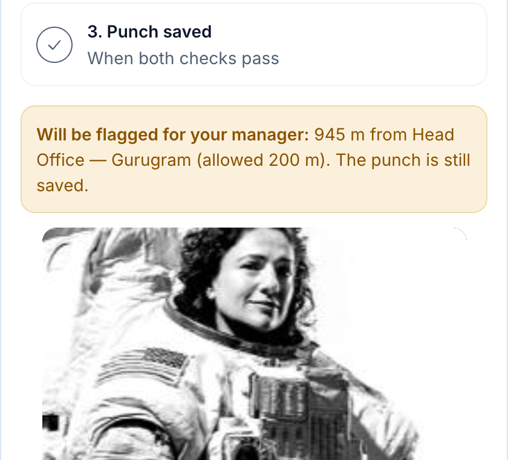
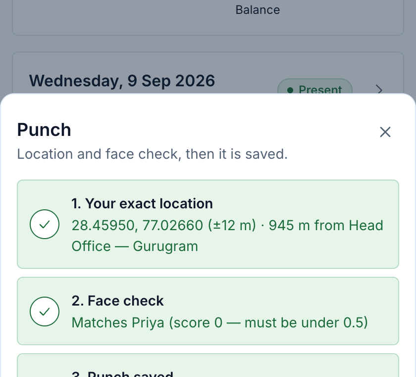
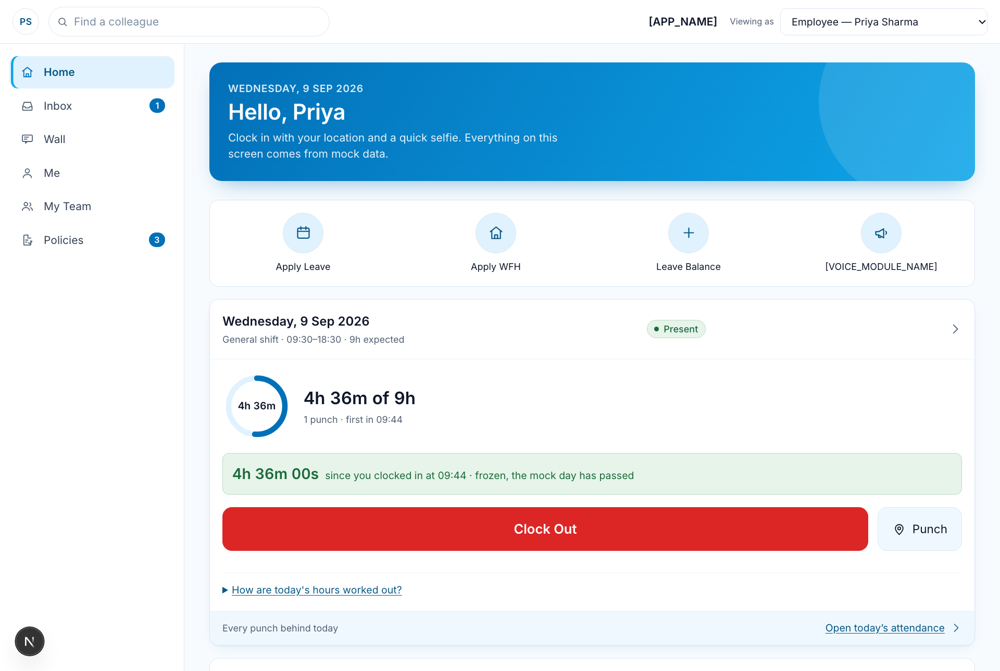

In-house HR application to replace Keka · phone-first · prepared 21 October 2026
Code: github.com/jiyasiwach/magppie-hr-app (temporary home) · Live: magppie-hr-app.vercel.app · Local: http://localhost:3040
An HR app for Magppie's office, showroom, factory and site staff. The front end is complete — 33 screens covering attendance, leave, approvals, the employee directory, documents, policies, a company wall, surveys, reports, an HR assistant and a confidential grievance module. It currently runs on invented sample data; the database design is written but not yet switched on.
New in this round: attendance now requires the employee's exact location and a face check before any clock-in, clock-out or punch is saved, and the app has a new white and sky-blue look.
| Area | Status | Notes |
|---|---|---|
| Screens / front end | Complete | 33 pages, phone and desktop layouts |
| Location + face check on attendance | Built and tested | New this round — see section 3 |
| Data | Sample data only | 40 invented employees; resets on page reload |
| Database (Supabase) | Designed, not applied | 4 migration files ready; the Supabase project has not been created |
| Sign-in | Not built yet | A role switcher (Employee / Manager / HR) stands in until Google sign-in is configured |
| Automated code checks | Pass | Type check, lint and production build all pass on a fresh copy from GitHub |
| Section | What employees, managers and HR can do |
|---|---|
| Home | Today's shift and hours, one big Clock In / Clock Out button, Punch, who is off this week, birthdays and anniversaries, announcements, holidays |
| Inbox | One queue for everything waiting: leave, requests, documents to sign — approve, reject or comment in place |
| Attendance & Leave | Month calendar with day detail, regularisation requests, leave balances with the full working shown, apply for leave, team calendar |
| Me | Time, finances (marked "not configured"), documents, assets, ID card, my working rules, face for attendance |
| My Team / Directory | Departments, who is away, profiles, reporting tree, employment history and timeline |
| Policies & Wall | Policies with read-acknowledgement; company feed with reactions and comments |
| Employee Voice | Confidential grievances: anonymous tickets store no identity, harassment cases go only to the committee, managers have no access by design |
| Ask HR assistant | Answers from published policies and the person's own records, cites the policy, refuses on grievances, pay disputes and legal questions |
| Reports & Surveys | Headcount, attendance, leave and tenure reports; a report builder; eNPS surveys (no result shown below 5 respondents) |
| Settings (HR) | Custom fields, approval chains, integrations, attendance sites (new) |
Clock In, Clock Out and Punch now save only after both checks:
If the person is farther from their site than allowed (default 200 m), the punch is saved but flagged for the manager, never blocked, because installers clock in at client sites. HR records each site's position by standing there and tapping "use my location" (Settings → Attendance sites). Each punch keeps the location, its accuracy, the distance from the site, the match score and a small selfie for review.
Face matching runs entirely on the phone (open-source face-api library); no photo is sent to any server in this version.
| Test | Expected | Result |
|---|---|---|
| Register a face, then punch as the same person | Saved with location and match | Passed |
| A different person tries to punch for that employee | Blocked, nothing saved | Passed |
| Punch 945 m from the site (limit 200 m) | Saved and flagged for the manager | Passed |
| Location permission refused | Clear message, nothing saved | Passed |
| Camera permission refused | Clear message, nothing saved | Passed |



Changed from brown and beige to white with sky blue: white sidebar and header, a sky-blue active menu item, a sky-blue welcome banner on Home, rounded cards with soft shadows, and pill-shaped buttons. All text colours were checked for readability (WCAG AA contrast).

git clone https://github.com/jiyasiwach/magppie-hr-app.git cd magppie-hr-app git checkout verified-punch-and-sky-theme # this round's work (local branch until pushed) npm install npm run dev -- -p 3040 # then open http://localhost:3040
Use the "Viewing as" switcher (top right) to see the Employee, Manager and HR views. To try the camera feature, open the app in Chrome or Safari and allow location and camera when asked. On a phone it needs HTTPS (the deployed site), because browsers only allow camera and GPS on secure pages.
[APP_NAME] (a one-line change).| # | Needed | Who / why |
|---|---|---|
| 1 | Create the Supabase project (magppie-hr-prod) | Owner. Nothing on the database side can start without it. |
| 2 | Choose the product name | Management |
| 3 | Move the GitHub repo from jiyasiwach to Magppie1234 | Owner. This unlocks automatic deploys on the Magppie Vercel team. |
| 4 | Configure Google sign-in | Google Workspace admin. Also confirm factory and site staff have Workspace accounts. |
| 5 | HR policy answers (33 open questions) | HR: shift timings, who is HR admin, leave rules, approval chains, document visibility, and the face/location questions above |
| 6 | Data-protection basis | HR/legal: the database region (Singapore) holds Indian employees' data, plus the new biometric consent |
| Item | Location |
|---|---|
| Code (temporary home) | github.com/jiyasiwach/magppie-hr-app — this round is on branch verified-punch-and-sky-theme, not yet pushed |
| Live site | magppie-hr-app.vercel.app (personal Vercel account, temporary). Does not include this round's changes yet. |
| Full technical docs | AI_MEMORY.md (start here), README.md, and docs/01–17: architecture, database, business rules, workflows, testing, open questions, backlog |
| Database design | supabase/migrations/0001–0004 |
| New feature code | src/components/attendance/, src/data/verification.ts, src/lib/face.ts, src/lib/geo.ts, /me/face, /settings/sites |